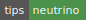
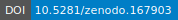
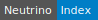

Neutrino is one of the most interesting particles in our world. The first proposal of such a new particle was given by Pauli. He managed to explain the spectrum of beta decay. In 1956, neutrinos were first detected in Cowan–Reines neutrino experiment. [1] Later on a lot of neutrino experiments have been carried out.
| [1] | Cowan–Reines neutrino experiment |
Fig. 1 First detection of neutrino
This project is part of NeuPhysics . Just click the link already and see what’s going on.
Notes of some research is hosted on bitbucket as private repository here . Login to view the most current research if you have access to it.
Support me:
Cite this doc:
Here is also an index:
Sitemap can be downloaded: sitemap.xml or sitemap.xml.gz .
Table of Contents
© 2017, Lei Ma | Created with Sphinx and . | On GitHub | Physics Notebook Statistical Mechanics Notebook | Index | Page Source